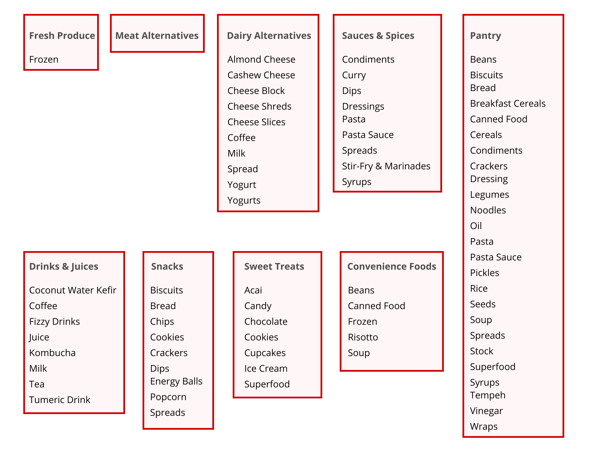
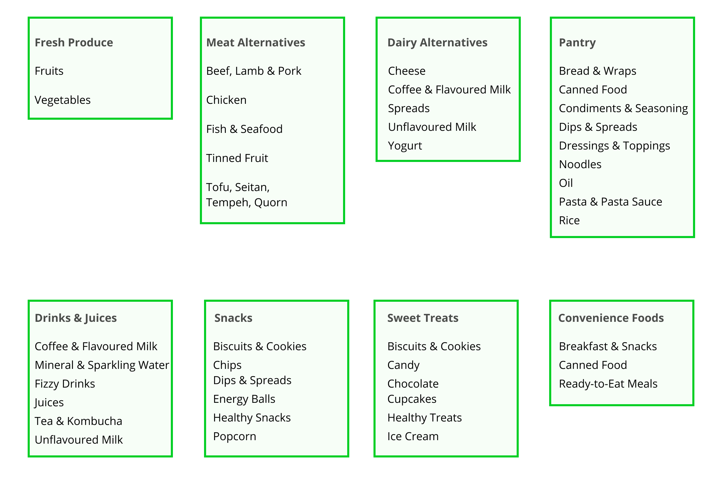

Everyday Vegan Grocer
Improving the usability and information architecture of a vegan grocery store's e-commerce website.
Everyday Vegan Grocer
Improving the usability and information architecture of a vegan grocery store's e-commerce website.
Project Type 💻
Real-World Project
Duration 🕒
1 month (Sep 2020)
Location 📍
Singapore (Remote)
Team 👥
- 1. Jingxiu Cheng (UX Researcher)
- 2. Cindy Yeo (UX Designer)
- 3. Razie Rasid (UX Designer)
Project Aim
Improve the usability and information architecture of Everyday Vegan Grocer's online store.
My Role
As the UX Researcher, my main responsibility was to create the research plan, conduct the user research and analyse the results. I was also actively involved in ideation, especially in coming up with our information architecture solutions.
Skills & Tools
- User Interviews (Zoom)
- Usability Tests (Zoom)
- Card Sort (OptimalSort)
- Tree Test (Treejack)
- Heuristic Evaluation
- Information Architecture Audit
- Competitive Analysis
- Prototyping (Figma)
- Collaboration (Miro, Trello)
Overview
Background
Everyday Vegan Grocer is Singapore's first vegan grocery store! They sell a variety of animal-friendly and planet-conscious products, ranging from fresh vegetables and meat alternatives to convenience foods, snacks and drinks.
The Problem
Everyday Vegan Grocer operates primarily through their online website, which is created using Shopify's e-commerce platform. However, they received some complaints about the usability of the website and the categorisation of their products.
Our Goal
The aim of this project was to improve the usability and information architecture of Everyday Vegan Grocer's online store.
1. Discovering the Problem
We conducted our first round of research with 8 participants, who were either prospective customers (vegan-curious/passionate about sustainability & health) or current customers of Everyday Vegan Grocer.
Understanding Users
We conducted user interviews to understand the motivations, pain points and online shopping behaviour of prospective and current customers.
Evaluating Usability
We conducted usability tests and a heuristic evaluation to evaluate the usability of the current website.
Information Architecture
We conducted a moderated open card sort and an information architecture audit to explore how the current information architecture could be improved.
* The open card sort was conducted before the usability test to prevent the navigation structure on the current website from affecting the participants' card sort responses.
* Since we had limited access to participants, I decided to conduct a moderated open card sort (instead of a tree test). This gave us useful qualitative insights about users' mental models.

2. Defining the Problem
Affinity Mapping
After collecting the qualitative insights from the usability tests and open card sorts, we conducted affinity mapping (using Miro) to identify the main themes underlying the usability and information architecture problems.
Afterward, we prioritised these issues based on their severity and frequency, on how easy they were to fix, and whether they hindered the main user flow.

Personas
From the user interviews, we came up with two personas that captured the profiles, behaviours and goals of Everyday Vegan Grocer customers.
3a. Ideation - Design
From our usability testing, we found that users were not satisfied with the current website (Average satisaction score: 5.8 out of 10).
Based on the usability issues we identified, we came up with design solutions and created a prototype to communicate our ideas.
I outline below some of the main usability problems we uncovered and how we addressed them in our proposed design.
Home Page
Problem 1: Upon landing on the home page, users were unsure on what to do next. They had to scroll down to find the search bar or to view the shop categories and products.
Problem 2: The "How can I help you?" section was disliked by users.
Problem 3: Although users were always looking out for products that were "On Sale" or were "New Arrivals", these pages had low discoverability.
Hence, we came up with ideas to address the problems on the home page, and created a prototype to communicate our recommendations. Eventually, our solutions were implemented on Everyday Vegan Grocer's live website.

Shop Pages
Problem 1: Users did not use the subcategories to help them find products.
Problem 2: It was difficult to navigate between the main categories.
Problem 3: Lots of scrolling was required to browse products.

Our prototype shows our solutions for the usability issues on the Shop pages.

3b. Ideation - IA
Using the findings from our open card sorts and information architecture audit, we identified several problems with the previous information architecture and came up with a new and improved information architecture.
Problems - Previous Information Architecture
There was an unbalanced distribution of subcategories. For example, "Meat Alternatives" had no subcategories while "Pantry" had 25 subcategories.
There was an uneven distribution of products between subcategories. Some subcategories only had 1 item while others had over 40 items.
Many subcategories were too specific or similar to one another. For instance, within "Dairy Alternatives", there were five different subcategories for cheese, and two different subcategories for yogurt. Within "Pantry", there was a subcategory for Cereals and another for Breakfast Cereals.
Our Proposed Information Architecture
Based on our information architecture audit, we created a new information architecture with a reasonable number of subcategories within each category and a suitable number of products within each subcategory.
Based on the open card sort findings, we created new subcategories (e.g. healthy snacks) and regrouped specific products (e.g. tofu is now categorised under "Meat Alternatives" instead of "Fresh Produce")
4. Testing our Ideas
We conducted our second round of research with a current customer of Everyday Vegan Grocer.
Unfortunately, we only recruited 1 participant due to time constraints and last-minute drop-outs.
Testing our Design
To test our proposed design, we conducted a comparative usability test of the Everyday Vegan Grocer website (before changes were made) with our prototype.
To reduce social desirability bias, we told the participant that the prototype was not made by us.
The participant preferred our prototype over the current website, because:
- Products & categories were displayed first on the home page, while less important information (recipes, blogs) was displayed later.
- It was easier to navigate between categories & subcategories.
- The interface was cleaner and less cluttered.
Testing our Information Architecture
To test our new information architecture, we conducted a tree test for our proposed categories & subcategories.
The quantitative findings were optimistic. The participant achieved a success rate of 100% and a directness score of 100% (went to the right category immediately without backtracking). They also took less than 10 seconds to find each item.
We also received positive qualitative feedback. The participant commented that the categories & subcategories were clear and the tree test was "easy!"
Although these findings provide some support to our solutions, we acknowledge that further research is required to fully test our ideas due to our limited sample size.
Outcome & Reflections
Outcome
The client was satisfied with our ideas, and was particularly pleased with my contributions to the project. Within the same week of our project handover meeting, they updated their website to follow our proposed information architecture and implemented most of our design recommendations.
"I particularly find the work on information architecture very well thought out given the limited time and interview material."
Client, Everyday Vegan Grocer
"Props to Jingxiu. I think he has fantastic communication skills and I can tell he put a lot of effort and thought into the project. Great presenter, and I can tell he drove a lot of the solutions."
Client, Everyday Vegan Grocer
In addition, I had a great experience working with the UX Designers in my team.
Jingxiu has shown his strength on the research well, be it on his approach or methodology and is very accommodating and always ready to share with the team. He is organised, analytical, proactive and an excellent teammate to have.
Cindy Yeo, UX Designer
Despite the hurdles that we faced, Jingxiu's technical analytic research skill and patient nature was pivotal for the success of the project. Jingxiu's personality and research skills will be a vital asset for any organization!
Razie Rasid, UX Designer
Reflections
From this project, I learnt that it is crucial to understand the client's needs. Initially, we were planning to redesign the website completely and come up with a brand-new interface. However, after communicating with the client, we realised that they wanted solutions that were actionable in the short-term. Hence, we focused on coming up with simple design fixes and an improved information architecture, since they are feasible and can be immediately implemented within their current e-commerce platform (Shopify).
I was also given the experience of working under real-world constraints. During this project, we encountered many challenges including a shortage of participants, limitations of the e-commerce platform (Shopify) and issues with remote testing. If you want to find out more about how we adapted our research and design to these constraints, and what else I would do if given unlimited time and resources, please get in touch with me!